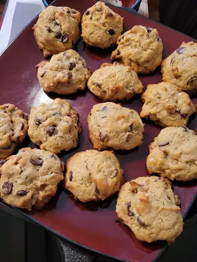

Chocolate Chip Cookies

A brief introduction
A chocolate chip cookie is a sweet baked treat that is recognized by its butter flavor and
the inclusion of chocolate chips.
Some variations can include nuts, oatmeal or raisins as well.
Just the smell of these cookies baking in the oven can boost your mood and make you feel happy.
Eating a chocolate chip cookie can also help to relieve stress and anxiety.
The carbohydrates in the cookie help to release serotonin, which is a “feel good” chemical in your brain.
Ingredients
- 2 sticks of butter creamed with white and brown sugars.
- Eggs
- Vanilla
- Baking Soda
- A bit of hot water
- A pinch of salt
- Chocolate chips
- Flour
- Nuts(optional)
Steps
- Beat the butter and sugars, then beat in the eggs and vanilla.
- Dissolve the baking soda in hot water and add to the mixture.
- Stir in the flour, chocolate chips, and walnuts.
- Drop dough onto a prepared baking sheet.
- Bake until the edges are golden brown.